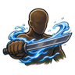
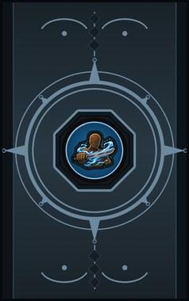
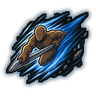
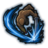
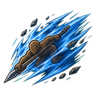

Dull Cut C
Channel chakra along any weapon for a fight, even a stick: it cuts. (Needs a melee weapon.)
| Rank | Chakra | Cooldown | Class level |
|---|---|---|---|
| C | 14 | 15 s | 3 |

Technique trees › Universal taijutsu
4 techniques · Taijutsu tab
Unlocks through World of Naruto's own trees, a gene, a build choice or a profession.

Channel chakra along any weapon for a fight, even a stick: it cuts. (Needs a melee weapon.)
| Rank | Chakra | Cooldown | Class level |
|---|---|---|---|
| C | 14 | 15 s | 3 |

Rush through a line of enemies, weapon first. (Needs a melee weapon.)
| Rank | Chakra | Cooldown | Class level |
|---|---|---|---|
| C | 14 | 15 s | 5 |

A front-flip slash that falls short on purpose, then a rising thrust into one enemy. (Needs a melee weapon.)
| Rank | Chakra | Cooldown | Class level |
|---|---|---|---|
| C | 14 | 15 s | 7 |

A longer, harder rush through everyone in the way. (Needs a melee weapon.)
| Rank | Chakra | Cooldown | Class level |
|---|---|---|---|
| B | 24 | 25 s | 10 |